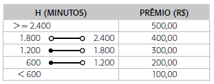

Uma empresa deciciu dar uma gratificação de Natal a seus funcionários, baseada no número de horas extras e no número de horas que o funcionário faltou ao trabalho. O valor do prêmio é obtido pela consulta à tabela que se segue, na qual:
H = número de horas extras trabalhadas - (2/3 * (número de horas que faltou))
OBS: O resultado da espressão acima está em HORAS
A tabela abaixo exibe o valor da gratificação baseado na quantidade de horas de bonificação convertida em MINUTOS
Escreva o código Kotlin necessário dentro da função calcularNovoSalario existente no arquivo Task.kt. Após implementar a função calcularNovoSalario clique no botão Check, logo abaixo, para verificar se seu código esta correto.